背景介绍
为什么需要商家调节供价（供货价格）？
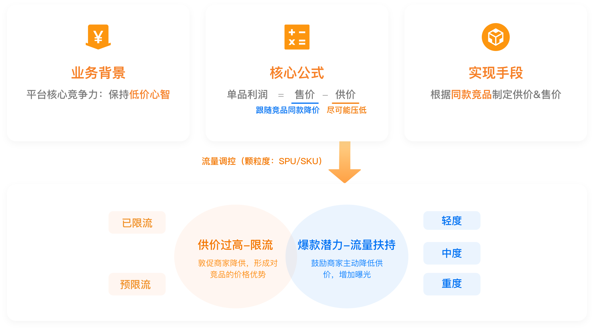
我们如何触达商家？
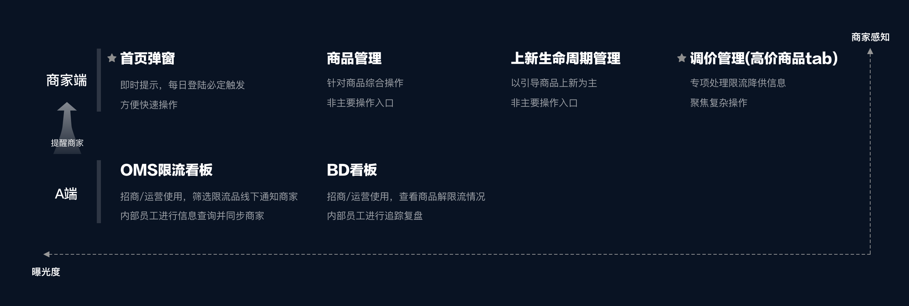
用户流程
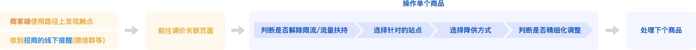
主要痛点
1. 每个商品的操作链路都较长，商家决策成本较高，影响最终的降供率
思考：商家如何平衡「收益 (曝光)」和「损失（降供幅度）」，是否存在侧重？
从争取收益出发：根据要解除限流的站点决定降供幅度
从减小损失出发：存在价格底线，根据最低降供幅度决定解除限流的站点
快速测试：两个方向设计各自设计了原型图，交由招商和产品调研
结论：商家反馈偏向以争取「收益 」为主，减小「损失」为辅
2. 线上的调价模式是以「商品*站点」为颗粒度展示，需要操作的数据量太多，打击商家操作意愿
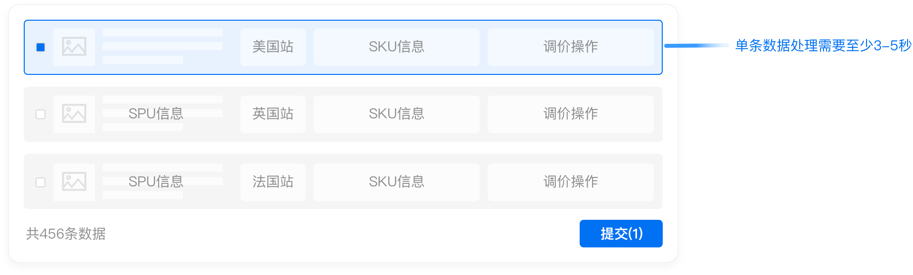
*尽管支持批量操作，但仍需要商家浏览、判断、勾选，无法减少决策时间
3. 目前商家端限流信息的曝光有限
商家每天需要处理上品、合规、物流、报名等多项事务，分摊到解限流的精力有限
针对策略
1. 将单个商品下所有站点限流情况合并展示，统一处理
默认解除所有站点的限流，支持修改
2. 用「选择题」取代「填空题」
将默认的配置简化为2-3个核心选项，便于商家快速判断和选择；在此基础上支持自定义调整等次要复杂操作
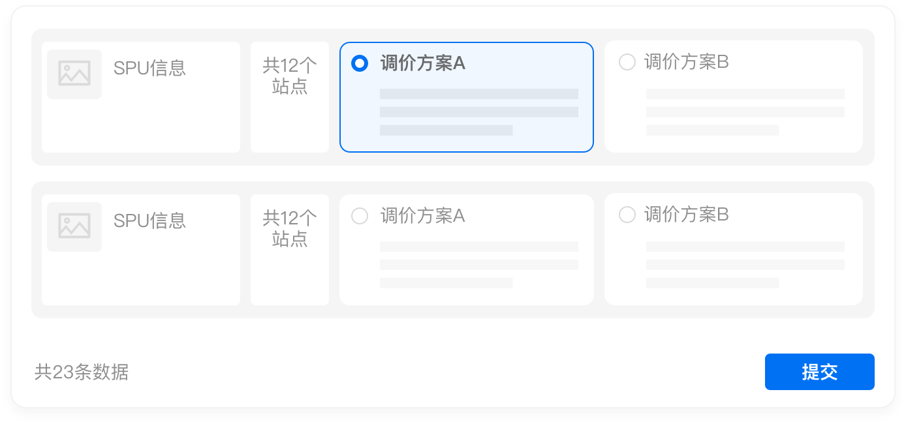
3. 商家使用路径上增加触点，提升积极性
招商会在A端后台配置好可解限流的商品并发送链接，帮助商家快速导航至「调价管理(高价商品tab)」
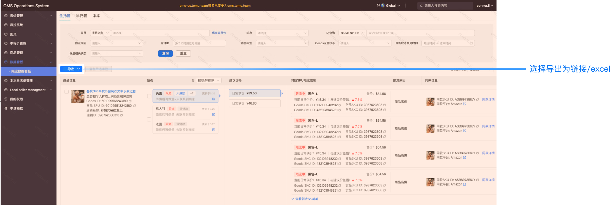
首页弹窗新增「稍后处理」按钮，支持添加至待办；减少商家的心里负担
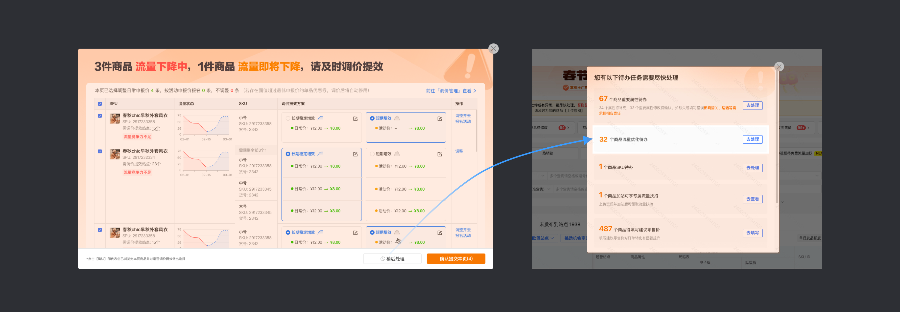
成果示意
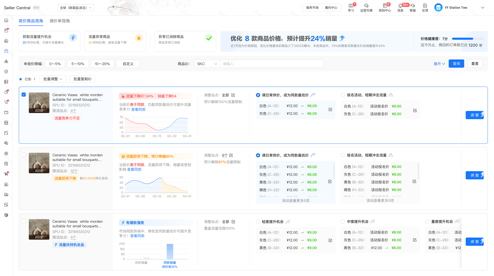
试错复盘
方向一：按申报价分档
未采纳原因：输入的操作成本较高，仅部分商家对SKU价格有明确的心理底线
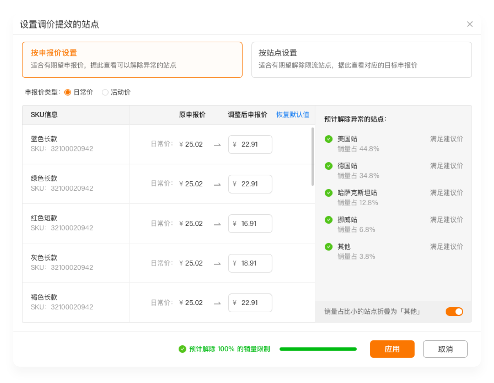
方向二：平铺站点分档
未采纳原因：信息密度过大，首页弹窗场景下用户没有足够的时间和操作动力
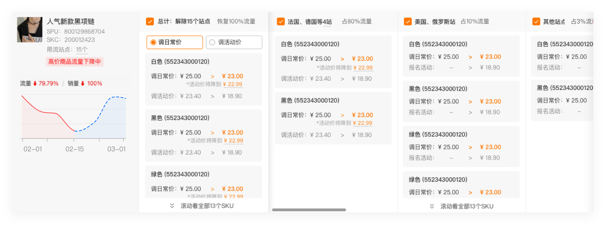
方向三：按限流范围分档
未采纳原因：1.选项位置居中，部分商户无法感知 2.分档逻辑不清晰 3.兼容自定义场景较差
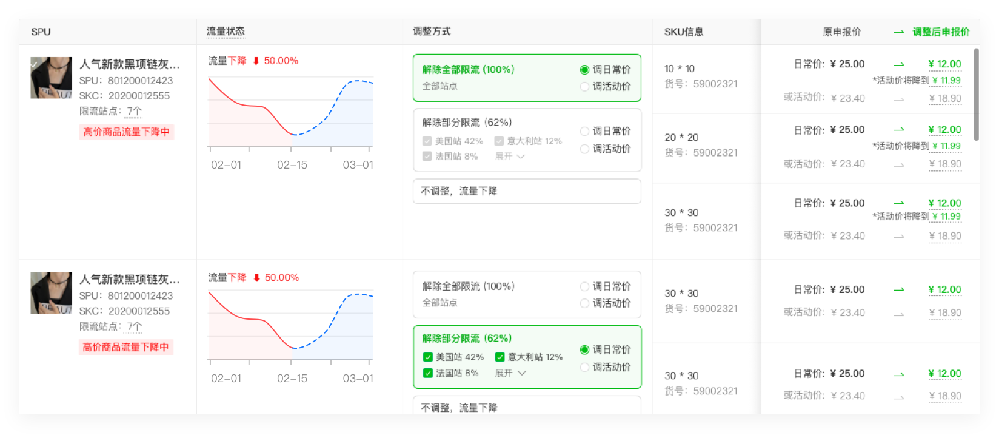